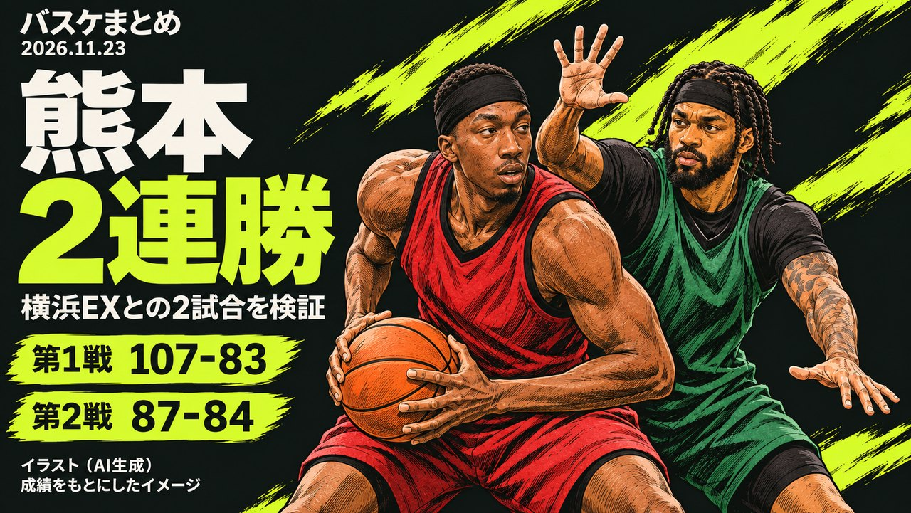

熊本が横浜EXに2連勝、107-83と87-84の2試合を検証

熊本ヴォルターズが、横浜エクセレンスとの2連戦に連勝しました。第1戦は107対83、第2戦は87対84です。
この記事では、公式ボックススコアから2試合の差を見ます。同じ相手に24点差と3点差になった理由を分析します。
【検証】第1戦は熊本が107-83で圧勝
11月21日の第1戦は、横浜BUNTAIで行われました。熊本が24点差をつけて勝ちました。
熊本はLJ・ピーク選手が26得点をあげました。ジャスティン・マッツ選手は20得点11リバウンド5アシストでした。
横浜EXはトレイ・ボイド選手が35得点でした。3ポイントは14本中7本を決めました。
それでもボイド選手が出ていた間は、得失点差がマイナス25でした。得点が伸びても、チームの失点を止められませんでした。
【分析】第1戦はゴール下の得点差が決め手
2点シュートの成功は、熊本が47本中32本でした。横浜EXは47本中17本にとどまりました。
ペイント内の得点は、熊本が29点です。横浜EXは15点でした。
横浜EXは3ポイントを35本打ち、11本を決めました。外の確率に頼る形になり、内側の守りで差が開きました。
【検証】第2戦は熊本が87-84で逃げ切り
11月22日の第2戦も、横浜BUNTAIで行われました。熊本が3点差で勝ち、連勝を決めました。
ボイド選手は36得点でしたが、3ポイントは14本中4本でした。熊本はマッツ選手が17得点13リバウンド10アシストでした。
石川海斗選手は3ポイントを8本中4本決め、14得点をあげました。山本翔太選手は20得点でチーム最多でした。
【分析】3点差まで詰まった理由
第2戦の2点シュートは、熊本が41本中20本でした。横浜EXは47本中20本で、第1戦より差が縮まりました。
横浜EXはリバウンドで47対38と上回りました。オフェンスリバウンドも20対13でした。
ペイント内の得点は、両チームとも17点でした。第1戦で開いた内側の差が、第2戦では消えています。
一方で熊本は、アシスト21本に対してターンオーバーが11本でした。終盤まで大崩れしなかったことが、3点差での勝利につながったと見られます。
【分析】次の注目点
次の試合は、11月28日と29日です。
横浜EXは岐阜と対戦します。熊本は愛媛と戦います。
横浜EXはボイド選手への依存が大きいです。2試合とも得点の約4割をボイド選手が占めました。
ボイド選手以外の得点がどこまで伸びるかが、横浜EXの浮上の鍵になります。